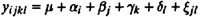

| TABLE 23.3 Transformed Data for the Paging Study
|
|
|
|
| GROUP
| FREQY
| ALPHA
|
| Algorithm
| Program
| 24P
| 20P
| 16P
| 24P
| 20P
| 16P
| 24P
| 20P
| 16P
|
|
| LRUV
| Small
| 1.51
| 1.68
| 2.73
| 1.72
| 2.39
| 3.00
| 1.77
| 2.73
| 3.13
|
|
| Medium
| 1.72
| 1.91
| 3.28
| 2.05
| 2.89
| 3.56
| 2.08
| 3.27
| 3.67
|
|
| Large
| 2.15
| 2.29
| 3.76
| 2.42
| 3.42
| 4.00
| 2.99
| 3.76
| 4.11
|
| FIFO
| Small
| 1.69
| 1.83
| 2.90
| 1.90
| 2.59
| 3.14
| 1.93
| 2.91
| 3.23
|
|
| Medium
| 2.00
| 2.13
| 3.50
| 2.21
| 3.10
| 3.69
| 2.31
| 3.53
| 3.77
|
|
| Large
| 2.37
| 2.54
| 3.96
| 2.66
| 3.57
| 4.13
| 3.21
| 4.00
| 4.23
|
| RAND
| Small
| 1.79
| 2.00
| 3.04
| 2.05
| 2.68
| 3.25
| 2.05
| 2.92
| 3.34
|
|
| Medium
| 1.98
| 2.39
| 3.58
| 2.37
| 3.18
| 3.78
| 2.46
| 3.49
| 3.88
|
| Large
| 2.42
| 2.30
| 4.09
| 2.71
| 3.69
| 4.27
| 3.24
| 3.95
| 4.36
|
|
| Data from Tsao and Margolin (1971). Reprinted with permission.
|
| TABLE 23.4 Main Effects in the Paging Study
|
|
| Factor
| Level 1
| Level 2
| Level 3
|
|
| A
| -0.16
| 0.02
| 0.14
|
| D
| -0.36
| 0.07
| 0.29
|
| P
| -0.47
| -0.02
| 0.49
|
| M
| -0.69
| -0.01
| 0.70
|
|
Other main effects are listed in Table 23.4. In addition to the main effect, there are six two-factor interactions, four three-factor interactions, and one four-factor interaction. The sum of squares of these effects and the percentage of variation explained by them is listed in Table 23.5.
Notice that most of the interactions are small. The only interaction that explained more than 1% variation is DM—the interaction between deck level and memory size. Therefore, all other interactions were considered negligible, and the following simplified model was used to represent the paging process:
